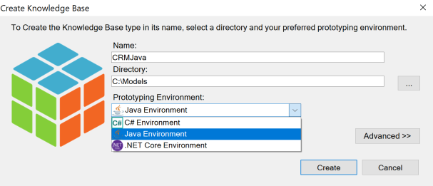
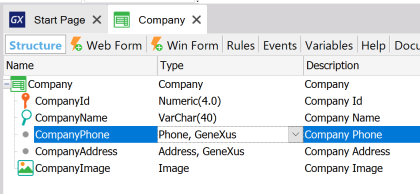
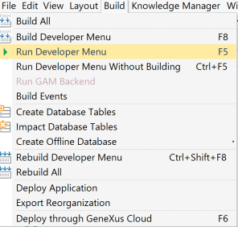
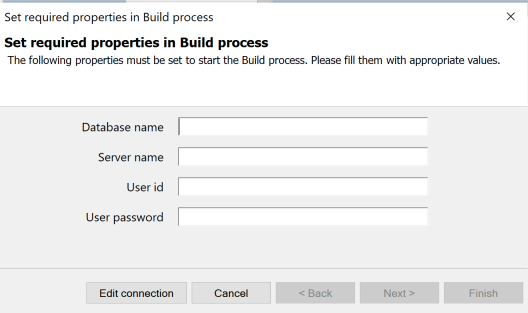
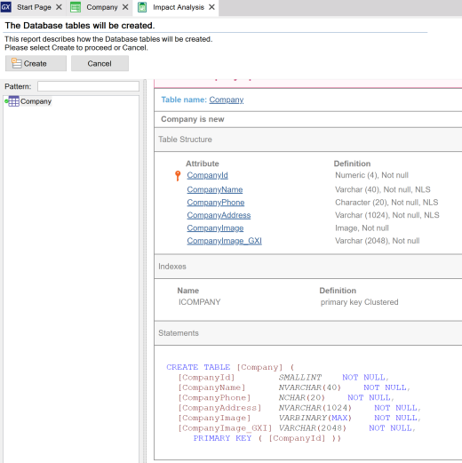
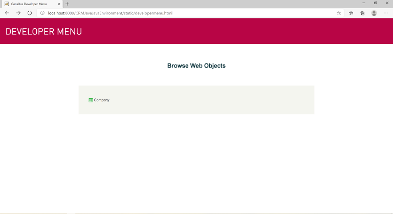
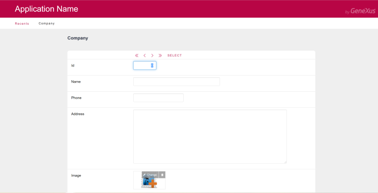
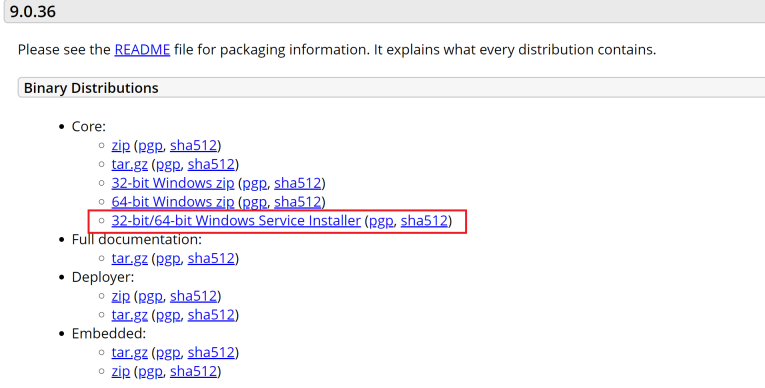

To generate your GeneXus application in Java, the following is required:
Step 1: Create a new Knowledge Base and in the Prototyping Environment Combo Box select: Java Environment.  Step 2: Create a new Transaction object (Company).  Step 3: Press F5 or select Build > Run Developer Menu.  Step 4: Set the Database information properties and press the Finish button.  Step 5: GeneXus will start the Build process and show an Impact Analysis. Press Create.  The generated application will be displayed in the browser.  
Considerations

|